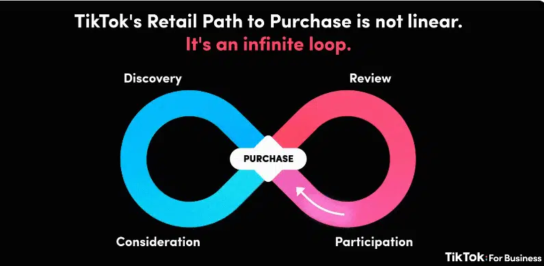
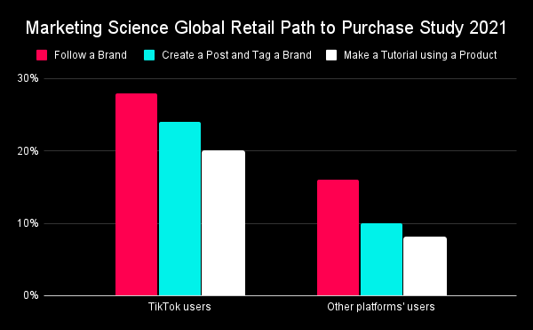
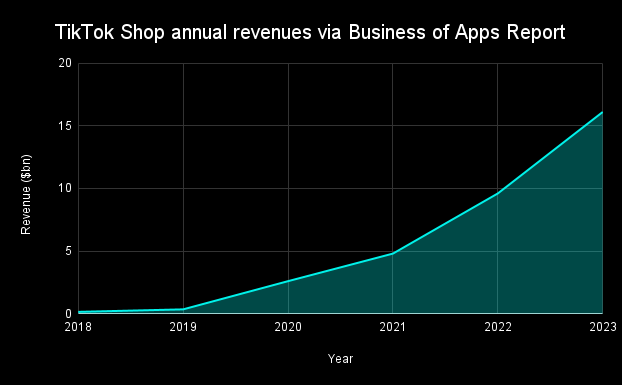

How TikTok Has Driven Consumerism
An exploration of the consumption habits of TikTok users.
By Rachel Brock

TikTok is a barrage of curated content, selected to cater towards people’s ever shortening attention spans. Many people can scroll aimlessly for hours without growing bored. But, what many users do not know, is that the videos they are viewing hold a profound impact on their consumer spending habits. The overlap of entertainment and advertisement has given TikTok an enormous influence over its audience.
The Infinite Loop
TikTok has perfected a tactic they like to call The Infinite Loop. With traditional marketing strategies becoming obsolete, the social media app has created an entirely new method of grabbing consumer attention.
Instead of trying to market just any product to users, TikTok uses algorithms in order to promote products that appeal to the user’s interests. Sellers are encouraged to make content about their product that entertains the audience. Users may watch the videos, follow the sellers and then eventually buy the product that is being advertised.
The key to the “infinite loop” is in the relationship between seller and consumer. If the process is utilized correctly, brands will gain loyal customers and increased sales. Users will gain a source of entertainment and access to products that are genuinely enjoyable. And, even once the purchase is complete, the relationship remains and the process of consumption continues, creating the aforementioned loop.
TikTok Shop
With the launch of TikTok Shop in September of 2023, the social media app became a one-stop-shop. When a video is posted to TikTok, products can be directly linked right above the caption. All users have to do is click the link, add to cart and purchase.
TikTok Shop has been revered for its convenience as well as its affordability. A variety of coupons and discounts are given to users as an incentive to buy. The culture surrounding TikTok Shop is very centered around making consumers feel like they need a product to better themselves or their lives – and they should buy it now.
@chloes_cart Replying to @? ITS HALF OFF RN!!$ RUN #vanillaskin #vanilla #perfume #smellgood #bodymist #phlur
♬ original sound - Chloes Cart 💕
This video, for instance, is an ad for a vanilla perfume. The creator starts the video with a comment about how she’s received an array of compliments about the perfume. She speaks in a quick manner to hold audience attention and urges them to buy the product immediately.
TikTok Revenue
Something that makes TikTok unique from other social media platforms is their hyper awareness of the purchasing power they hold. They want brands to be successful in their business pursuits and actively encourage the “infinite loop.”
TikTok has even gone as far as to create TikTok Shop Academy, a series of informational videos that explain everything a seller would need to know in order to navigate TikTok Shop. These videos range from How To Register For TikTok Shop to a Step by Step Guide on How to Create a Shoppable Video.
Clearly, TikTok has a vested interest in TikTok Shop sales. But, what is the company getting out of it monetarily?
According to TikTok's Introduction to Seller Fees transaction costs are taken by TikTok Shop after the order has been placed. This is charged to all sellers and is 2.24% of the item's price, regardless of what it is.
After the item has been delivered, TikTok Shop will automatically deduct a marketplace commission fee that is dependent on what the item is. This fee ranges from 2% to 3.6% of the item’s price. However, the marketplace commision fees are set to increase on June 1, 2024 to be between 2% and 5%.
TikTok Shop sales have increased tremendously over the past few years, which is in large part due to the push for sellers to become content creators. The numbers speak for themselves.
Avoid Getting Scammed
Even though TikTok Shop is extremely popular, it has also come under some scrutiny for quality issues and encouraging overconsumption. Some videos have been put on blast for making products look better than they actually are – and other advertised products were revealed to be complete scams.
If you want to buy something on TikTok Shop, but are weary of getting scammed, follow the tips below:
- Research the seller before buying. Are they verified?
- Look over customer reviews. Sometimes pictures of the product are included! If something looks too good to be true, it probably is.
- Know the return policy. If you end up not liking the product, will you get your money back?
- Take time to think about the purchase. Impulse buying often results in regretting purchases.
- Use a credit card. If you need to dispute a purchase, credit cards do not immediately take the money out of your account.